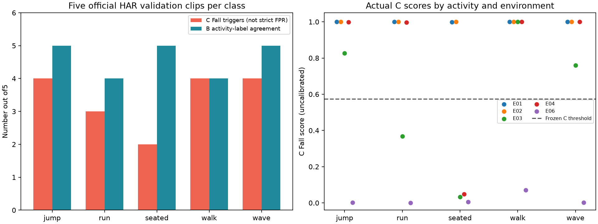

B/C 多活动真实数据诊断
CSI-Bench v12 · 官方 HAR val_id · HP / 232 / 5G · 五类各5条 · 固定B/C seed42
25条均完成：B活动标签一致 23/25；C触发Fall 17/25。C计数是HAR活动片段上的触发／疑似误报，不能作为严格误报率；单一活动标签不是逐帧无跌倒真值。本次没有跌倒阳性队列，不能评价跌倒召回率、事件报警率或报警延迟。
实际逐类结果
| 官方活动 | 数量 | B最高分与标签一致 | C输出Fall | C评分范围 |
|---|
| jumping | 5 | 5/5 | 4/5 | 0.002003–0.999974 |
| running | 5 | 4/5 | 3/5 | 0.000548–0.999999 |
| seated-breathing | 5 | 5/5 | 2/5 | 0.005001–1.000000 |
| walking | 5 | 4/5 | 4/5 | 0.070894–1.000000 |
| wavinghand | 5 | 5/5 | 4/5 | 0.002065–0.999997 |

已证实的检查结果
- 25条均为官方HAR验证划分的HP/232/5G数据，形状[232,500,1]，无NaN/Inf；没有补零或裁剪。
- 每条B/C原始幅度内容身份一致；25条原始输入及归一化输入均无精确重复。
- C逐值匹配固定官方__getitem__的轴转换和归一化，最大绝对差为0；该测试只替代了元数据/路径/标签查询，不测试官方构造器。
- 检查点确认Fall为softmax第0列；原有一条跌倒、一条非跌倒验证样本重算分数与保存值一致。
- 本队列环境E01/E02/E03/E04/E06与C的HP训练环境E21–E26不重叠。用户与环境绑定，不能据此分离环境与用户因果。
- C训练metadata只有Fall/Nonfall，无法证明其Nonfall包含了哪些跑步、行走、跳跃等具体动作。
- 生产权重、阈值/运行配置、训练manifest、B/C运行代码及生产回放SHA256均保持不变。
按同一审计内容哈希查到 C 集合精确重复：0条。与作者B验证记录同一用户/环境/设备/session：25条；B结果不是新的独立泛化基准。
环境／用户分组
| 环境 | 数量 | C输出Fall | B标签一致 |
|---|
| E01 | 5 | 5 | 4 |
| E02 | 5 | 5 | 4 |
| E03 | 5 | 3 | 5 |
| E04 | 5 | 4 | 5 |
| E06 | 5 | 0 | 5 |
每个环境对应本队列一个用户，每类仅一条，不能把环境与用户影响分开。不是环境总体误报率。
尚未证实的原因
- 跨任务、环境、用户或采集条件的分布偏移可能导致触发；目前同时存在多种差异，尚未证明某一差异是根因。
- C的Nonfall困难负样本覆盖不足是合理假设，但缺少原录制动作级来源，不能断言训练中从未包含某动作。
- 相同232×500尺寸不能证明实际采样间隔、物理子载波排列和射频条件相同；这些仍需采集记录核实。
- 极高softmax分数在本队列中出现，不等于真实事故概率高；目前未做概率校准或校准质量评价。
若持续出现，建议怎样做
- 先通过原始标注、视频或采集记录确认无跌倒区间，再把触发称为严格误报。
- 在调参前固定更大、多用户/环境/录制组的跨活动保留集，按活动、设备、环境分别报告触发；补充独立、已标注的跌倒阳性队列评价召回。
- 持续失败时先核对真实时间/子载波约定，再比较冻结C与加入困难负样本或域适配的候选；训练只使用另行指定并审核的训练样本，不能把这25条验证样本悄悄放入训练。
- 官方C实验和跨任务/适配实验分别记录，保留原官方划分；检查原始内容重复及同源录制组泄漏。
- 阈值或报警规则未来只在指定验证集选择，再冻结到独立保留集，同时比较误触发、漏检与延迟；本次没有做这些选择。
- B并列展示动作与置信度，供复核；running/walking与跌倒并非逻辑互斥，不能根据B的普通活动偏好自动关闭C。
当前阶段保持模型、阈值、训练数据和生产回放不变。B只作参考并列展示，辅助人工复核。
覆盖与限制
- 仅HP设备、5G、单人完整分段；没有ESP32、其他设备或多人场景。
- 每类5条、确定性选择5个用户/环境组，样本很小且非随机代表性抽样。
- 只有五类HAR活动标签；没有逐帧无跌倒标注，也没有本次跌倒阳性队列。
- 没有连续录制、报警事件匹配、每小时误报或报警延迟评价。
- 25条均能匹配作者B既有验证session，因此B标签一致结果不是全新独立泛化基准。
- 没有在C现有全部样本中找到这些25条的精确数字内容重复；这不能排除非完全相同的同源录制。
每类5个用户/环境组合为确定性诊断选择，非随机代表性样本，不给出总体性能置信区间。用户与环境在本队列中绑定，不能分离二者因果影响。无ESP32，无连续真实报警验证。
可复查证据
逐条CSV · 详细输入与输出 · 推理前选择协议 · 诊断与检查证据 · 下载核验 · 统计汇总
独立脚本：backend/modules/fall_detection/activity_probe_v1/probe.py 与 analyze.py。先select、再download、最后evaluate；分析不训练模型。既有选择文件不可覆盖。